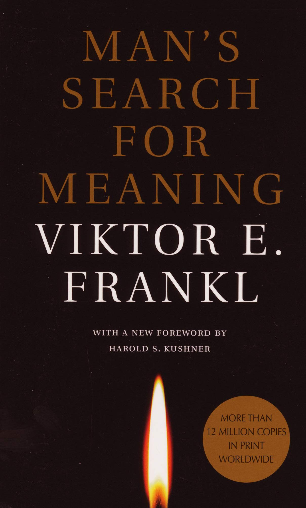

Man's Search for Meaning is a 1946 book by Viktor Frankl chronicling his experiences as a prisoner in Nazi concentration camps during World War II, and describing his psychotherapeutic method, which involved identifying a purpose in life to feel positive about, and then immersively imagining that outcome. According to Frankl, the way a prisoner imagined the future affected his longevity. The book intends to answer the question "How was everyday life in a concentration camp reflected in the mind of the average prisoner?" Part One constitutes Frankl's analysis of his experiences in the concentration camps, while Part Two introduces his ideas of meaning and his theory called logotherapy. According to a survey conducted by the Book-of-the-Month Club and the Library of Congress, Man's Search for Meaning belongs to a list of "the ten most influential books in the United States." At the time of the author's death in 1997, the book had sold over 10 million copies and had been translated into 24 languages.
